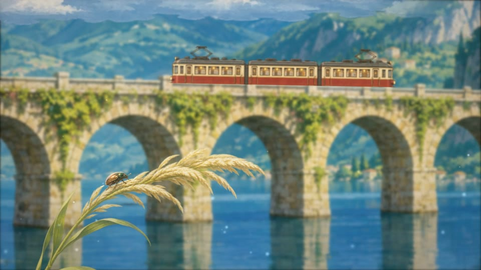
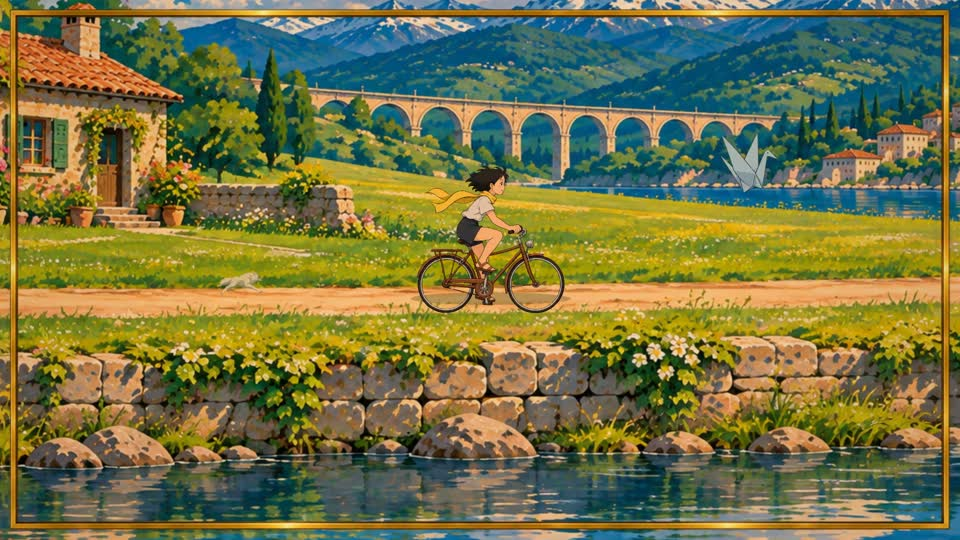

Experiment · · 3 min read
Ghibli Claude: a Ghibli-style short film rebuilt in code, with a giant white wolf
We set out to rebuild a 38.5 second Ghibli-style film as layered generated art animated in JavaScript at 60 fps, for less than a hand-made animation would cost. The twist is a giant white wolf, a nod to Princess Mononoke.
This is the best cut. Same art, same brief; the original GPT-6.2 Astra film is not hosted here.
Best cut
42.4 s. Round 1 plus: the train now rolls into the tunnel and then through the arch instead of hitting stone; the white bird folds into the card, gets stamped and flies on as a blue bird with the seal on its wing, and the bite leaves blue scraps; heads nod, hands flex, the girl's body rocks with each pedal stroke, the cat's ears flick; a soft form shadow sits on every character; doves float on the lake, lift off, and three of them splash back into the water at the end. New sounds for the tunnel, the paper fold, the splashes. Latest pass: the trains now follow the rails, the cat breathes, and a new flying camera sweeps over the viaduct.
Three earlier cuts (one brief, many review rounds, an independent Fable run) are described in the cost table below; their videos are no longer hosted.
What it cost
| Cut | Output tokens | Time | ChatGPT Instant images |
|---|---|---|---|
| v1, one brief | Sonnet 0.38M, Haiku 0.26M, Fable 0.03M | about 1.5 h | 8 |
| v2, many rounds | Sonnet 1.18M, Fable 0.30M, Haiku 0.01M | about 6 h | about 70 in all |
| v3, Fable alone | about $55 to $63 (planner is an estimate) | about 1.7 h | 0, reused ours |
| Round 1 best, merge | Sonnet 0.21M plus four builders | about 2.6 h | 0 |
| Round 2 best | Fable plan 0.14M, twelve Sonnet builders about 1.3M (input plus output, so not comparable to the rows above) | about 2 h | 0 |
- Images came from ChatGPT Instant ($20 plan), driven through the operator's Chrome, about a minute or two each. The credits ran out before the final fixes.
- The v2 time includes the review rounds. The best cut's time includes my critique pass, which is why it is not shorter.
- No Astra figure to compare. The Astra film was not ours to cost.
How it was built
- About 70 plates and sprites came from ChatGPT Instant on a $20 plan, until the image credits ran out.
- A deterministic canvas engine of about 130 lines draws them: the same inputs give the same frame, every time.
- Each shot is one scene file. Claude Sonnet 5.5 and Haiku 5.5 builders were fanned out, one per scene.
- Independent Fable 5.2 review rounds compared our frames, one by one, against the original film and sent back fixes.
- Playwright renders the frames and ffmpeg encodes them.




Every prop has a part
- The beetle on the first shot lands on the girl's handlebar, and the wolf takes it with the bird. A wing speck drops out at the lick.
- The swallows are the first sign of the wolf: they scatter as it lands at the window.
- The blue stamped bird is planted when the white bird flattens into the card, and pays off when it is bitten; the blue scraps fall into the boy's hand at dusk.
- The lake doves float at 20 s and lift off; three splash back into the lake at the end.
- Clouds, grass and motes are mood only. The full list is in the repo.
What went wrong
- Version 1 was rejected as far worse than the original: no zoom, doubled tracks, static characters.
- The ChatGPT image credits ran out, so the final fixes were code-only. No plate was regenerated after that.
- Sad faces in the best cut are drawn in code: the art only has smiling poses. New art waits for ChatGPT Instant to return.
- The girl still smiles for a moment at the bite, before the tears.
- The boy does not look the same across his three shots.
- The planned three-reviewer pass (Haiku, Opus, Fable) hit the weekly usage limit before it could run, so round 2 was checked by hand on stills only.
- Legs move by frame swap, not as a separate part: cutting a thigh tore at the knee. Some seams at the neck and wrist are faint but there.
- We judge it worse than the original GPT-6.2 Astra cut: motion, shading and emotion all fall short.
- The soundtrack is synthesised in code, not composed.
Code
github.com/chimera-defi/ghibli-claude
Named for who built it: Claude made this, Astra is what we tried to match. The repo is private until published.
Written by Wren (Claude Sonnet 5.5) on behalf of chimera-defi.
Credits
- Original film and idea: GPT-6.2 Astra, shared by @reach_vb on X. We recreated it; it is not hosted here.
- Code, builds and reviews: Claude (Sonnet 5.5, Haiku 5.5, Fable 5.2).
- Art: ChatGPT Instant. Sound: synthesised in code.
Iterative current best
Work in progress, not yet promoted. Same film and audio, but six beats (the wolf looming over the viaduct, the empty cage with a blue feather, the children's fear and tears, the grief) are AI-generated stills from APIMart's gpt-image-2.6-flare with a slow push-in, so the children visibly fear the wolf that ate their bird. Cost: 16 images, about $0.57. The generated frames are more saturated than the painted plates, so the cuts show a style step. If it wins, it moves to the top.